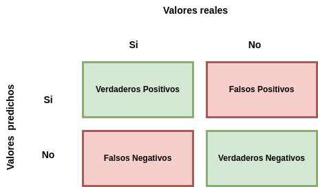
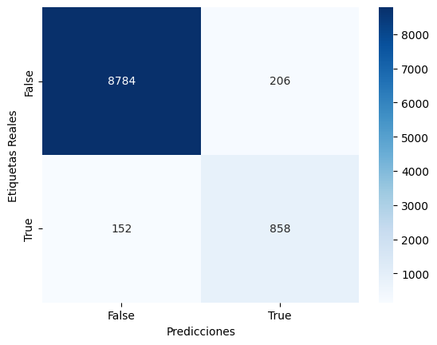
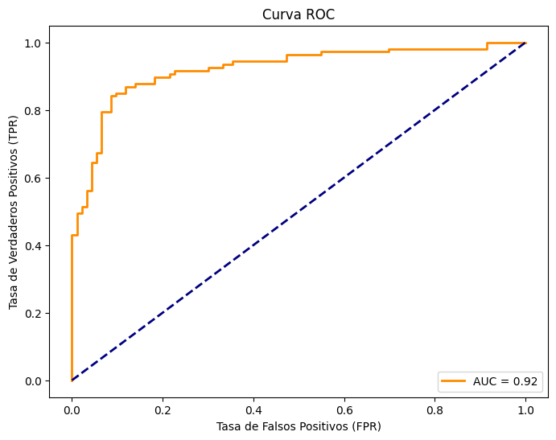

Entrenamiento del modelo#
El entrenamiento de modelos de aprendizaje automático es el proceso mediante el cual un modelo aprende a hacer predicciones o decisiones basadas en datos. Una vez ya se ha hecho la recolección de los datos y el procesamiento de estos datos, así como la selección de características, podemos pasar a entrar el modelo. Esto consta de los siguientes pasos:
Selección de algoritmo de aprendizaje: Aquí debe elegir el tipo de modelo a utilizar, como regresión lineal, árbol de decisión, red neuronal, etc., según el problema y los datos que tenga.
Entrenar el modelo: En este paso, introduce los datos de entrenamiento en el modelo, que ajustará los parámetros internos de este para hacer predicciones más precisas. El modelo busca minimizar el error entre su predicción y la etiqueta real.
Validación del modelo: Después de entrenar el modelo, se debe evaluar utilizando datos de prueba que nunca ha visto este modelo. Esto le permitirá obtener una medida objetiva del rendimiento de su modelo y verificar si el modelo generaliza bien los nuevos datos.
Ajuste de características o parámetros: Si el rendimiento del modelo no es satisfactorio, se pueden ajustar los hiperparámetros del modelo o probar diferentes arquitecturas para mejorar el rendimiento del modelo.
Implementación del modelo propuesto: Una vez que estés satisfecho con el rendimiento de tu modelo, puedes implementarlo en producción para hacer predicciones en tiempo real sobre nuevos datos.
Debe recordarse que el proceso de entrenamiento de modelos de aprendizaje automático es iterativo y puede requerir ajustes y mejoras constantes para lograr resultados óptimos. Además, es importante tener siempre en cuenta la ética y la privacidad cuando se trabaja con datos de usuarios o clientes.
Selección del algoritmo de aprendizaje#
Elegir el algoritmo correcto en el aprendizaje automático es como elegir la herramienta adecuada para un trabajo de programación. Cada algoritmo tiene sus fortalezas y debilidades, y encontrar el algoritmo correcto para resolver un problema en particular es esencial.
El primer paso para elegir un algoritmo de aprendizaje automático es comprender completamente lo que estás tratando de lograr. ¿Quieres categorizar todo? ¿Predecir el valor numérico? ¿Razón de una sola vez? Esto te dará una idea del tipo de algoritmo más adecuado. Para ello, hay que realizar un buen análisis de los datos, como ya hemos hecho, y comprender que tenemos entre manos. ¿Son datos numéricos, datos categóricos o alguna combinación? ¿Más o menos funciones? Esto ayudará a determinar los algoritmos correctos para manejar el tipo de datos que estamos tratando.
Otro factor que se debe tener en cuenta es el tamaño del conjunto de datos. Si se tiene un conjunto de datos pequeño, es posible que un algoritmo de baja complejidad evite el sobreajuste. Para grandes conjuntos de datos, posiblemente sea mejor considerar algoritmos más avanzados. El tamaño del conjunto de datos en un problema de aprendizaje automático se considera “grande” o “pequeño” en función de varios factores, incluyendo el contexto y la complejidad del problema.
En general, si tu conjunto de datos tiene millones o incluso miles de millones de ejemplos, se considera grande. Esto es común en problemas que involucran redes sociales, búsquedas en línea, aplicaciones móviles populares y más. También, si tus datos tienen muchas variables, incluso un conjunto de datos de tamaño mediano puede considerarse grande debido al gran conjunto de características y el tamaño de la dimensionalidad.
Por otro lado, si tu conjunto de datos contiene cientos o solo unas pocas muestras, se considera pequeño. Esto es común en áreas como la medicina, donde la recopilación de datos puede ser costosa y llevar mucho tiempo. Hay que tener en cuenta que, con conjuntos de datos pequeños, puede ser difícil realizar una validación cruzada adecuada para evaluar modelos sin quedarse sin datos para las pruebas. Además, con una pequeña cantidad de datos, existe un alto riesgo de que los modelos se ajusten demasiado a los datos de entrenamiento y no generalicen bien con los nuevos datos.
Es importante tener en cuenta que no existe un número específico que defina con precisión si un conjunto de datos es grande o pequeño. Además, lo que puede considerarse grande en un lugar puede ser pequeño en otro. En última instancia, la elección del algoritmo y el plan de procesamiento de datos debe depender del tamaño y el tipo de datos que esté utilizando.
Por ejemplo, los algoritmos de aprendizaje profundo, como redes neuronales, a menudo requieren conjuntos de datos grandes (millones y millones de registros) para aprender patrones complejos mientras que los problemas con patrones simples o relaciones especiales se pueden resolver mejor con un pequeño conjunto de datos.
Por otro lado, el tipo de relación que tiene los datos nos permite también decidirnos en que algoritmo vamos a utilizar. Hay que tener en cuenta cómo se relacionan las características con el resultado que se está tratando de predecir. ¿Tienen una relación lineal o no lineal? Esto determinará si debe usar un algoritmo lineal o no lineal.
También hay que considerar la necesidad de comprender cómo los algoritmos toman decisiones. Es posible que se desee utilizar algo más fácil de comprender, como los árboles de decisión o una regresión lineal. Por otro lado, si nos da igual esto y queremos que se obtenga el mejor resultado posible, utilizar algoritmos más complejos y opacos como las redes neuronales.
Hay que tener en cuenta que, aunque nos decantemos por un algoritmo en concreto, se pueden utilizar muchos otros para mejorar los resultados. Por lo tanto, no tengas miedo de probar diferentes algoritmos. Entrena y prueba diferentes modelos en tus datos. Mide su rendimiento utilizando métricas como el error cuadrático medio.
Proceso de entrenamiento#
Una vez ya tenemos claro que algoritmos de aprendizaje automático se adaptan mejor a nuestra problemática, vamos a entrenar el modelo. Entrenar un modelo es un paso esencial para crear sistemas inteligentes que puedan aprender de los datos. Es como enseñarle a una máquina a reconocer patrones y tomar sus propias decisiones basándose en los ejemplos proporcionados. Exploraremos este proceso paso a paso a continuación, utilizando un ejemplo de Python aplicado a nuestro Dataset para ilustrar cómo funciona.
from sklearn.model_selection import train_test_split
from sklearn.linear_model import LinearRegression
X = df1.copy().drop(['charges'], axis=1)
y= df1.copy()['charges']
X_train, X_test, y_train, y_test = train_test_split(X, y, test_size=0.2, random_state=1)
X_train, X_val, y_train, y_val = train_test_split(X_train, y_train, test_size=0.25, random_state=1)
reg = LinearRegression().fit(X_train, y_train)
y_pred = reg.predict(X_val)
Cuando trabajamos con algoritmos de aprendizaje automático, debemos asegurarnos de que nuestro modelo pueda generalizarse bien a nuevos datos que nunca había visto. Para lograr esto, dividimos nuestros datos en tuplas específicas, entrenamiento, validación y test. Esto nos permite entrenar, ajustar y probar el modelo de manera efectiva antes de implementarlo en el mundo real.
X = df1.copy().drop(['charges'], axis=1)
y= df1.copy()['charges']
X_train, X_test, y_train, y_test = train_test_split(X, y, test_size=0.2, random_state=1)
X_train, X_val, y_train, y_val = train_test_split(X_train, y_train, test_size=0.25, random_state=1)
En nuestro ejemplo, primero hemos separado la variable dependiente del resto de características, para posteriormente utilizar la función train_test_split, que divide los datos en dos conjuntos, uno de entrenamiento y otro de prueba. Esto se hace dos veces para poder generar los tres conjuntos indicados anteriormente. Date cuenta de que hemos introducido dos parámetros adicionales a los datos, test_size, que indica que porcentaje de los datos se van a utilizar para datos de prueba y random_state, que se para de forma aleatoria y no de forma secuencial estos datos.
Al final, nos tienen que quedar los siguientes Datasets:
{kind=link}
¿Pero para que se utiliza cada uno de estos Datasets? A continuación, vamos a explicar la función de estos y como se tienen que utilizar:
Conjunto de entrenamiento: Imagina que estás enseñando a un modelo a reconocer diferentes tipos de frutas. El conjunto de entrenamiento es como un conjunto de ejemplos que le das para aprender. Por ejemplo, muestra a los niños imágenes de manzanas, naranjas y plátanos para que puedan reconocer las características de cada fruta. Computacionalmente, el conjunto de entrenamiento es el mismo que los datos que usa para “entrenar” el modelo. Das ejemplos con sus características (atributos) y respuestas (etiquetas). El modelo aprende a reconocer patrones y relaciones en estos ejemplos mientras ajusta sus parámetros internos.
Conjunto de validación: Después de entrenar el modelo, se debe evaluar el rendimiento de este y ajustar cualquier parámetro que pueda afectar el entrenamiento. Aquí es donde entra la validación. Los datos de validación sirven para verificar el comportamiento del modelo en datos que no ha visto durante el entrenamiento. En términos de computación, es como usar el conjunto de datos de “prueba” en un programa antes de ejecutarlo. El conjunto de validación ayuda a determinar si el modelo se ajusta demasiado (sobreajuste a los datos de entrenamiento) o no (no aprende lo suficiente). Se deben ajustar los parámetros del modelo en función de su rendimiento en este proceso.
Conjunto de prueba: Por último, tienes la suite de pruebas. Este conjunto se usa después de haber entrenado y ajustado el modelo mediante los conjuntos de entrenamiento y validación. El conjunto de pruebas brinda una evaluación objetiva del rendimiento de tu modelo con datos nuevos. En términos de computación, es como poner un programa a prueba en escenarios del “mundo real” antes de su lanzamiento oficial. El conjunto de pruebas garantiza que el modelo pueda hacer predicciones precisas sobre nuevos datos que no vio durante el entrenamiento.
Una vez los datos ya han sido divididos, se puede pasar a entrenar el modelo. En nuestro ejemplo, al ser un problema de regresión, vamos a utilizar el algoritmo más sencillo para la predicción, la regresión lineal (LinearRegression).
reg = LinearRegression().fit(X_train, y_train)
y_pred = reg.predict(X_val)
El primer paso es cargar el modelo y posteriormente entrenarlo con la función fit(). Esta función se usa para ajustar o entrenar un modelo utilizando el conjunto de datos de entrenamiento. Cuando llamas a fit() en un modelo, alimentas con los datos de entrenamiento a ese modelo, y el modelo ajusta sus parámetros internos para aprender patrones y relaciones en esos datos.
En términos más simples, la función fit() es como el proceso de enseñar un patrón a través de ejemplos. Le muestra cómo se ven los datos de entrenamiento y deja que descubra patrones por sí mismo para que pueda hacer predicciones sobre los nuevos datos.
Una vez entrenado el modelo, podemos pasar a realizar predicciones con él. Para ello, usaremos la función predict(). Esta función permite usar el modelo entrenado para predecir valores o clases en nuevos datos que nunca había visto. En otras palabras, esta función toma nuevas versiones de los datos de entrada y devuelve predicciones calculadas por el modelo.
Cuando ya somos capaces de predecir nuevos resultados, podemos pasar a evaluar el modelo y los resultados que este obtiene para saber si se acercan a la realidad o realmente difieren mucho.
Validación del modelo#
La validación de un modelo de regresión implica verificar qué tan bien puede hacer predicciones precisas en nuevos datos que no ha visto antes. Es como poner a prueba el modelo para asegurarse de que sea efectivo en situaciones reales.
Es esencial para asegurarte de que el modelo no solo funcione bien en los datos con los que fue entrenado, sino también en situaciones del mundo real. Si el modelo tiene un buen desempeño en el conjunto de datos oculto, tendrás más confianza en su capacidad para hacer predicciones precisas en circunstancias desconocidas.
Por ejemplo, supongamos que has entrenado tu modelo con datos de casas de diferentes áreas y estilos. Ahora, deseas asegurarte de que el modelo pueda predecir los precios correctamente en situaciones del mundo real. Para evaluarlo, tienes un conjunto de datos que no se usó durante el entrenamiento. Este conjunto contiene información sobre casas y sus precios reales.
Una vez entrenado, utilizas el modelo para hacer predicciones sobre los precios de las casas en el conjunto de datos oculto. No conoces los precios reales de estas casas; estás probando qué tan bien el modelo puede adivinarlos.
Ahora, comparas las predicciones del modelo con los precios reales de las casas en el conjunto de datos oculto. Cuanto más cercanas sean las predicciones a los valores reales, mejor será el desempeño del modelo.
Para ello, puedes utilizas métricas específicas, como el Error Cuadrático Medio (MSE), para medir cuán lejos están las predicciones del modelo de los valores reales en el conjunto de datos oculto. Si el MSE es bajo, significa que el modelo hace buenas predicciones.
Basado en las métricas y la comparación entre las predicciones y los valores reales, puedes determinar qué tan bien funciona tu modelo. Si el desempeño es satisfactorio, el modelo podría ser útil para hacer predicciones en nuevos datos. En caso contrario, habrá que hacer modificaciones y reentrenarlo.
Métricas de evaluación de modelos de regresión#
Las siguientes métricas son herramientas esenciales para evaluar y comparar modelos de regresión en términos de su rendimiento y capacidad para hacer predicciones precisas en datos no vistos. Cada una aborda diferentes aspectos de los errores y la calidad del ajuste del modelo a los valores reales.
| MÉTRICAS DE EVALUACIÓN DE LOS MODELOS DE REGRESIÓN | |||
|---|---|---|---|
| MSE | Mide el promedio de los errores al cuadrado entre las predicciones de un modelo y los valores reales. Cuanto menor sea el MSE, más cercanas serán las predicciones a los valores reales. | ||
| MAE | Calcula el promedio de las diferencias absolutas entre las predicciones de un modelo y los valores reales. Es una medida de la magnitud promedio de los errores, independiente de su dirección. | ||
| RMSE | Es la raíz cuadrada del MSE. Proporciona una medida intuitiva del error promedio entre las predicciones y los valores reales. Al igual que el MSE, cuanto menor sea el valor, mejor. | R² | También conocido como R cuadrado, mide la proporción de la variabilidad de los valores dependientes (objetivo) que el modelo es capaz de explicar. Un valor más cercano a 1 indica que el modelo captura bien las variaciones en los datos. |
| MAPE | Calcula el promedio de los errores porcentuales absolutos entre las predicciones y los valores reales. Es útil para medir la precisión relativa del modelo en términos porcentuales. | ||
Aplicar modelo al ejemplo de los seguros#
Vamos a seguir con el ejemplo práctico que estamos tratando. Primero cargaremos el dataset preprocesado del análisis de datos:
import pandas as pd
df = pd.read_csv('../../../csv/insurance_preprocesed.csv')
df.head()
| Unnamed: 0 | No | age | bmi | children | charges | region_IDN | region_northeast | region_northwest | region_southeast | region_southwest | sex_IDN | sex_female | sex_male | smoker_IDN | smoker_no | smoker_yes | |
|---|---|---|---|---|---|---|---|---|---|---|---|---|---|---|---|---|---|
| 0 | 0 | 0 | 19.0 | 27.900 | 0.0 | 16884.92400 | 0 | 0 | 0 | 0 | 1 | 0 | 1 | 0 | 0 | 0 | 1 |
| 1 | 1 | 1 | 39.0 | 33.770 | 1.0 | 1725.55230 | 0 | 0 | 0 | 1 | 0 | 0 | 0 | 1 | 0 | 1 | 0 |
| 2 | 2 | 2 | 28.0 | 33.000 | 3.0 | 4449.46200 | 1 | 0 | 0 | 0 | 0 | 0 | 0 | 1 | 0 | 1 | 0 |
| 3 | 3 | 3 | 33.0 | 22.705 | 0.0 | 21984.47061 | 0 | 0 | 1 | 0 | 0 | 0 | 0 | 1 | 0 | 1 | 0 |
| 4 | 4 | 4 | 32.0 | 28.880 | 0.0 | 3866.85520 | 0 | 0 | 1 | 0 | 0 | 0 | 0 | 1 | 0 | 1 | 0 |
Posteriormente, preprocesamos un poco los datos, eliminado las columnas que no son necesarias y hacemos la división de los datos en los dataset de entrenamiento, validación y test:
from sklearn.model_selection import train_test_split
df = df.drop(['No'], axis=1)
X = df.copy().drop(['charges'], axis=1)
y= df.copy()['charges']
X_train, X_test, y_train, y_test = train_test_split(X, y, test_size=0.2, random_state=1)
X_train, X_val, y_train, y_val = train_test_split(X_train, y_train, test_size=0.25, random_state=1)
print("Filas del dataset de entrenamiento: " + str(X_train.shape[0]))
print("Filas del dataset de test: " + str(X_test.shape[0]))
print("Filas del dataset de validación: " + str(X_val.shape[0]))
Filas del dataset de entrenamiento: 802
Filas del dataset de test: 268
Filas del dataset de validación: 268
Finalmente, aplicaremos el algoritmo de regresión lineal a nuestros datos y veremos los resultados que se obtienen:
from sklearn.linear_model import LinearRegression
from sklearn.metrics import mean_squared_error
from sklearn.metrics import mean_absolute_error
from sklearn.metrics import r2_score
from sklearn.metrics import mean_absolute_percentage_error
reg = LinearRegression().fit(X_train, y_train)
y_pred = reg.predict(X_val)
mse = mean_squared_error(y_val, y_pred)
print("MSE: " + str(round(mse, 2)))
#calcular RMSE
rmse = mean_squared_error(y_val, y_pred, squared=False)
print("RMSE: " + str(round(rmse, 2)))
#calcular MAE
mae = mean_absolute_error(y_val, y_pred)
print("MAE: " + str(round(mae, 2)))
#calcular R2
r2 = r2_score(y_val, y_pred)
print("R2: " + str(round(r2, 2)))
#calcular MAPE
mape = mean_absolute_percentage_error(y_val, y_pred)
print("MAPE: " + str(round(mape, 2)))
MSE: 41318948.82
RMSE: 6427.98
MAE: 4603.53
R2: 0.7
MAPE: 0.51
Como podemos observar, no se han obtenido unos buenos resultados en cuanto al cálculo del coste de los seguros. Si por ejemplo nos centramos en el RMSE, podemos observar que el los costes se nos han desviado en un valor promedio de 6427.98 dolares (Recordemos que la media estaba en torno a 13311.26 dolares).
Podemos representar con una gráfica la línea que ha calculado nuestro modelo y los puntos reales que se quieren predecir, para representar en cuanto ha fallado nuestra predicción de forma visual:
{kind=link}
Nota
Llegados a este punto, nos vamos a centrar solo en tres métricas, el RMSE, el MAPE y el R².
Validación cruzada#
Una alternativa para evaluar nuestros modelos es utilizar la validación cruzada. La validación cruzada es una técnica fundamental en el campo del aprendizaje automático y la estadística que se utiliza para evaluar el rendimiento de un modelo predictivo. Su propósito principal es abordar la variabilidad en la estimación del rendimiento del modelo y garantizar que la evaluación sea robusta y generalizable. Este método implica dividir el conjunto de datos en diferentes subconjuntos, realizando múltiples rondas de entrenamiento y prueba en distintas particiones.
En su forma más común, la validación cruzada k-fold divide el conjunto de datos en k partes iguales, utilizando k-1 partes para entrenar el modelo y la parte restante para evaluar su rendimiento. Este proceso se repite k veces, de modo que cada subconjunto se utiliza como conjunto de prueba exactamente una vez. Al final, se promedian los resultados de todas las iteraciones para obtener una métrica de rendimiento global.
{kind=link}
Una ventaja clave de la validación cruzada es su capacidad para proporcionar una estimación más precisa del rendimiento del modelo en comparación con una única división de datos. Además, ayuda a mitigar el riesgo de sobreajuste al evaluar el modelo en múltiples configuraciones de datos. Esta técnica es especialmente útil cuando el tamaño del conjunto de datos es limitado, ya que maximiza la información utilizada tanto para entrenar como para evaluar el modelo.
Por ejemplo, vamos a relizar la validación cruzada de nuestro modelo con un total de 10 validaciones:
from sklearn.model_selection import cross_val_score
scores = cross_val_score(reg, X, y, scoring="neg_mean_absolute_percentage_error", cv=10)
scores
array([-0.47228407, -0.45610038, -0.4311499 , -0.51238639, -0.47700388,
-0.48940038, -0.48260175, -0.45880937, -0.44544081, -0.57950976])
La puntuación del modelo y la desviación vienen dadas por:
print("%0.2f accuracy with a standard deviation of %0.2f" % (-scores.mean(), scores.std()))
0.48 accuracy with a standard deviation of 0.04
Parece ser que la puntuación del modelo no mejora, por lo tanto, ho hemos avanzado nada. Pero, ¿Como podemos reducir este error? En los siguientes apartados veremos un conjunto de técnicas que harán que nuestro error mejore y tengamos un modelo más confiable.